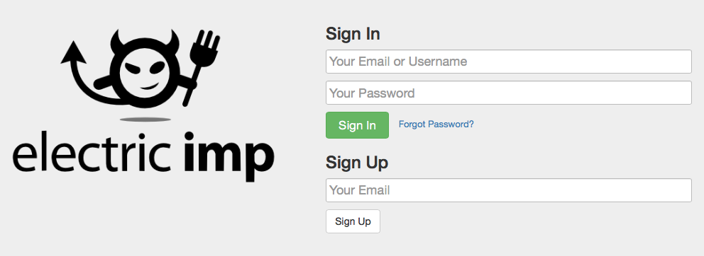
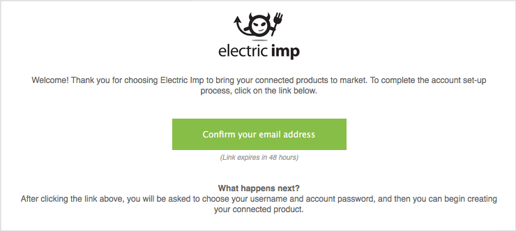
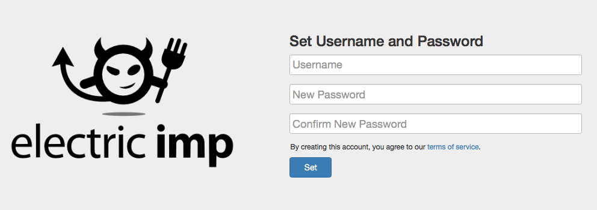

あなたが Electric Imp の impExplore Kit をお持ちでない場合、オンラインのサプライヤから購入可能です。（訳注：日本版はこちらから購入できます）。本キットに加えて必要となるアイテムは下記のとおりです。
それでは、次の手順に従って Electric Imp アカウントを作成していきましょう。
お持ちの Electric Imp impExplorer Kit をオンラインにする最初のステップは、Electric Imp アカウントの作成です。このアカウントは無料で取得でき、Electric Imp IDE（統合開発環境）へのアクセスが付与されます。IDE については本ガイドの 後のセクションで説明しますが、開発デバイス上で実行するソフトウェアを開発する際に使います。
アカウントの作成は最初の一度だけです。あなたのアカウントに複数の impExplorer や他の開発デバイスを追加し、IDE を通じてそれらすべてをプログラムしたりモニタすることが可能です。

Electric Imp IDE のサインインと登録画面
では、アカウントを作りましょう。登録ページ に進み ‘Sign Up’セクションに Email アドレスを入れてください。ほどなく Email アドレスの確認メールが届きます。下記メール本文の ‘Confirm Your Email Address’ ボタンを押してください。

登録後に受け取る確認メール
ボタンを押した後、自動的に IDEログイン画面に進み、ユーザネームとパスワードを設定するよう要求されます。パスワードは8文字以上必要です。下記画面の ‘Set’ ボタンをクリックしてください。

アカウント作成画面
次のセクション では impExplorer のインターネット接続設定を行います。